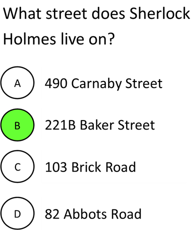

- Cover
- About
-
Contents
I. - A SCANDAL IN BOHEMIA II. - THE RED-HEADED LEAGUE III. - A CASE OF IDENTITY IV. - THE BOSCOMBE VALLEY MYSTERY V. - THE FIVE ORANGE PIPS VI. - THE MAN WITH THE TWISTED LIP VII. - THE ADVENTURE OF THE BLUE CARBUNCLE VIII. - THE ADVENTURE OF THE SPECKLED BAND IX. - THE ADVENTURE OF THE ENGINEER'S THUMB X. - THE ADVENTURE OF THE NOBLE BACHELOR XI. - THE ADVENTURE OF THE BERYL CORONET XII. - THE ADVENTURE OF THE COPPER BEECHES
-
Illustrations
"A MAN ENTERED" “THE DOOR WAS SHUT AND LOCKED” “ALL AFTERNOON HE SAT IN THE STALLS” “SHERLOCK HOLMES WELCOMED HER" “GLANCING ABOUT HIM LIKE A RAT IN A TRAP” “THEY FOUND THE BODY” “THE MAID SHOWED US THE BOOTS” “‘HOLMES,’ I CRIED, ‘YOU ARE TOO LATE’” “AT THE FOOT OF THE STAIRS SHE MET THIS LASCAR SCOUNDREL” “‘HAVE MERCY!’ HE SHRIEKED” “‘GOOD-BYE, AND BE BRAVE’” “‘NOT A WORD TO A SOUL’” “‘I WILL WISH YOU ALL A VERY GOOD NIGHT’” “I CLAPPED A PISTOL TO HIS HEAD” “‘I AM SO DELIGHTED THAT YOU HAVE COME’”
Project Journal
16/07
Decided to do the Project on The Adventures of Sherlock Holmes
2/08
Designed the HTML frame for the website
16/08
Design Sketches:
Sketched possible designs for the cover, about, contents, and
main pages.
Fonts:
Found fonts for my headings and body from Google Fonts.
Colors:
Decided to use white on black as the genre is mystery, which is
well represented by using black as the dominant color.
04/09
Created the cover page of my web page – my plan originally was to
use the sprite shown below, with the bottom sprite appearing when
you hovered over the bottom right corner. I had some trouble
implementing this and eventually decided that it would be more
clear to the reader to just use the bottom part at all times.
05/09
Changed fonts to new ones from Adobe Fonts
Developed the design frame that all pages other than the cover will use and used it to create the about page
Implemented the design frame to create the rest of the pages
06/09
Did styling touch ups
Added dropdown functionality to nav bar
07/09
Received feedback from Phil regarding how to improve my
website, he suggested:
Add more content (e.g. synopsis) to the about page
Decrease words per line and increase typeface size
Make side navigation buttons more obvious
Implement a button to return to the top of the page
Add a comment to say who wrote it and why
08/09
Implemented some of the suggestions that Phil suggested, I decreased the words per line to approximately 12 per line, and increased the typeface size accordingly. I felt like this resulted in the typeface being too large so I decreased line width and typeface slightly to retain 12 words per line while decreasing typeface size.
Added a white outline of a triangle around the previous/next page navigation buttons so that the user doesn’t have to hover over them to realise they’re there.
20/09
Planned two interactive elements, one of which will be implemented.
Interactive Element 1 – Explanation boxes
Because Sherlock Holmes is an old book, some of the words used are less common today. This feature would allow the user to hover over select words or phrases to have a definition appear in a box.
Before hovering:
After hovering (design not final):
Interactive Element 2 – Interactive quiz
This feature would allow the user to take a quiz on Sherlock Holmes trivia. The user would click one of the answers. If it is the correct answer, the clicked answer would turn green, if it is a wrong answer, the clicked answer would turn red.
Before clicking:
After clicking:

21/09
After receiving feedback at the critique session, I’ve decided to implement the second interactive element, the quiz.
01/10
Began implementing the JavaScript quiz into my project, I’ve added buttons
for questions as well as a next question button, and created functions to
set colour based on whether the answer is right or wrong. Moving to the
next question and changing the correct button still needs to be implemented,
as well as making design decisions to make the quiz fit the aesthetic of the
website.
I also still need to improve content on the about page.
21/10
Finished designing the quiz and added more questions. Based on feedback from
the critique session, I added a results page at the end and ability to
reattempt.
I also added a synopsis and about the author section to the about page as was
recommended at the checkpoint.
Improvements to static site
Add synopsis and information about the author
Added this content to the about page
80 char 10-12 words per line, make typeface larger
Changed main chapter text to use vmax instead of px, so content will fit various screen sizes. Set to approximately 10-12 words per line, as recommended, which involved making the typeface larger, as well as slightly decreasing paragraph width.
Make side buttons more obvious
Made arrow indicators visible even when not hovered in order to make the buttons more obvious.
Ability to go back to top from bottom of page
Added a link at the bottom of relevant pages to go back to top
Comparison between design and implementation
Cover image
As mentioned above, I originally planned to use a sprite as my cover image, however I realised that not indicating that the bottom right corner could be clicked on when not hovered was a bad idea, as it could be missed by the user.
Header font selection
In my original design for the critique as shown below, I used a cursive font in my header, and had two lines of header, one for the adventure number, and one for the adventure name. After receiving poor feedback on this design's aesthetic, I instead used my current header font, and combined the two header lines into one.
External Resource Table
| URL/source and attribution | How it was used |
|---|---|
| Text content from The Gutenberg Project. | The text content of the chapters. |
| Sherlock Holmes image by Piotr Siedlecki, (CC0 Public Domain), retrieved 4/09/2021. | Used in the cover for the eBook. |
| Sherlock font by Dikas Studio (authorised for personal use only). | Used as the font for the cover image. |
| "Swamped Swallow" by DigitalEpicness (Public domain), retrieved 4/09/2021. | Used as the background image for all pages except the cover. |
Back to top